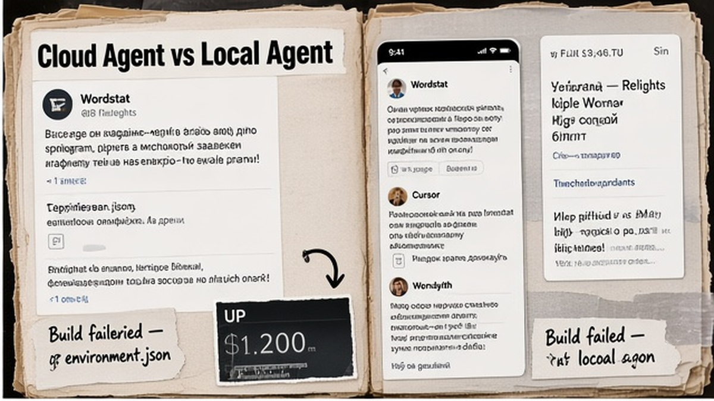
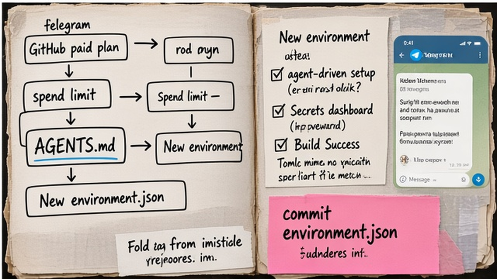

Cloud agent в Cursor клонирует repo, ставит зависимости, прогоняет тесты и открывает PR, пока ноутбук свободен. Настройка cursor cloud agents чаще всего ломается на GitHub без read-write, красном Build и secrets не в dashboard. Ниже – цикл за 30–60 минут: environment → Build → agent run → PR. Вы повторите схему на своём repo и почините failed Build по логам Builds tab.
TL;DR / Быстрый инсайт: Cloud Agents (ранее Background Agents) – ИИ-разработчик в Ubuntu VM в облаке Cursor. Нужен paid plan, GitHub read-write, spend limit. Окружение – agent-driven setup или .cursor/environment.json: install на Build, dev-серверы в start/terminals. Secrets только в dashboard. После Build Success – agent из Desktop (Cloud) или cursor.com/agents → PR.
Cloud Agents – VM (виртуальная машина, отдельный "компьютер" в облаке) с Ubuntu и dev-стеком: агент клонирует repo, работает в ветке, пушит и отдаёт PR. Раньше их называли Background Agents – в docs 2026 актуально имя Cloud Agents. Локальный Agent – instant feedback на ПК; cloud – параллельные run, артефакты и preview портов без нагрузки на ноутбук. Cursor Automations (cursor.com/automations) – другой продукт: cron, GitHub event, Slack; cloud agent – разовая сессия под fix+test+PR по вашему prompt.

| Критерий | Cloud Agent | Локальный Agent |
|---|---|---|
| Где работает | Ubuntu VM в облаке | Ваш ПК |
| Лучше для | Fix + test + PR, параллельные run | Быстрые правки |
| Окружение | Build + environment.json | Локальный Node/Docker |
| Оплата | Paid plan + API usage + spend limit | Подписка Cursor на ПК |
Делайте: cloud для refactor, миграций, CI. Не делайте: гонять каждый typo в облако – дороже и медленнее локального Agent.
Cloud Agents на всех paid планах Cursor; Hobby не подходит. Админ подключает GitHub/GitLab/Bitbucket/Azure DevOps с read-write. При первом run Cursor просит spend limit – потолок API billing модели.
Делайте: SCM до environment. Не делайте: write в monorepo без понимания primary repo для PR.

Workflow: GitHub → New environment → agent-driven setup → Secrets → Build Success → commit environment.json → agent run → PR
Agent-driven setup (рекомендуется): Cursor настраивает dev environment за минуты (официальные docs – менее 10). Dashboard → New environment → Run setup agent → укажите secrets, если install тянет private npm или Docker registry → дождитесь verification и Success на Builds tab → закоммитьте .cursor/environment.json в repo, чтобы команда видела ту же конфигурацию.
Ручной путь для Docker-heavy repo: создайте .cursor/Dockerfile (не COPY весь project – Cursor сам checkout commit), пропишите build.dockerfile и build.context относительно папки .cursor; команда install выполняется из корня проекта. Push → Builds tab → Trigger build. Legacy environment без Builds: вкладка Builds → Enable Builds или снова Run setup agent.
С 17.08.2026 Builds по умолчанию. Snapshot – только disk state; failed Build не меняет active. Recurring – каждый час; boot с Build до 3x быстрее. Отдельной платы за Builds нет.
Приоритет окружения: 1) environment.json в repo, 2) personal, 3) team. Делайте: config-as-code в Git. Не делайте: только personal snapshot без коммита.
environment.json – конфиг агента. Schema: 10 полей на cursor.com/schemas/environment.schema.json; typo startup → rejected.
| Поле | Когда | Пример |
|---|---|---|
| install | Build (idempotent) | pnpm install |
| start | Старт agent (detached) | service docker start или "true" |
| terminals | Старт agent (tmux) | pnpm dev + description |
| ports | Preview для agent | 3000 |
Без start terminals могут не стартовать – добавьте "start": "true" (forum Cursor, ответ staff):
{"name":"my-app","build":{"dockerfile":"Dockerfile","context":".."},"install":"pnpm install","start":"true","terminals":[{"name":"dev","command":"pnpm dev","description":"port 3000"}],"ports":[{"name":"web","port":3000}]}
Делайте: deps в install, сервисы в start/terminals. Не делайте: secrets в JSON – поля нет в schema. Snapshot ID блокирует Dockerfile rebuild – удалите для пересборки.
Secrets – только вкладка Secrets в dashboard, не environment.json (в schema 10 полей и нет credentials). Environment и team secrets доступны во время Build – например, token private registry в install. User secrets inject при старте agent run. Running agent не подхватит secret, добавленный mid-session – запустите новый run.
MCP ("розетки" для browser, GitHub, CMS) для cloud – dropdown dashboard и Team MCP. Локальный mcp.json cloud не читает. Подробнее: MCP в Cursor, cursor rules и AGENTS.md.
Делайте: новый agent после secret. Не делайте: ждать от running session.
PR из cloud можно связать с Make (webhook, CRM) – на курсе Make.com разбираем цепочку agent → автоматизация.
| Симптом | Действие |
|---|---|
| Build failed | Builds tab logs → fix install → Trigger build |
| Нет secret | Secrets tab → новый agent run |
| Terminals мертвы | "start": "true" или start-команда → tmux logs |
| Dockerfile игнорируется | Удалите snapshot ID из JSON – он выше Dockerfile |
| Legacy без Builds | Enable Builds или setup agent → Confirm Success |
Делайте: читайте Build logs до правки install или Dockerfile. Не делайте: паниковать из-за одного failed Build – fleet работает на последнем успешном snapshot.
Материал проверен: эксперт Артур Хорошев (CEO Maya AI, Cursor и Make.com).
Достоверность данных: Builds, environment.json, Secrets – docs Cursor на 13.09.2026; "start": "true" – forum.cursor.com (staff).
Cloud – Ubuntu VM, Build, PR без вашего ПК. Локальный – быстрые правки на месте. Cloud – длинные задачи и параллельные run.
Cloud agent – сессия с PR по prompt. Automations – cron/GitHub/Slack на cursor.com/automations. Fix+test+PR – cloud; регулярный мониторинг – Automations.
База: build (dockerfile/context) или snapshot; install – команды на этапе Build; start, terminals, ports – при старте agent. Полная schema – cursor.com/schemas/environment.schema.json (10 полей, unknown keys rejected). API keys в JSON не пишут – только Secrets tab dashboard.
Да. Cloud Agents доступны на Pro, Pro Plus, Ultra; Hobby не подходит. Тарификация – API pricing выбранной модели; при первом запуске задайте spend limit в dashboard, иначе run может не стартовать.
Откройте Builds tab и logs ошибки install или Dockerfile. Failed Build не заменяет active – agents продолжают с последнего Success. Исправьте конфиг, нажмите Trigger build и дождитесь зелёного статуса перед новым production run.
Добавьте secret во вкладке Secrets с правильным scope (team, environment или user). Запустите новый agent run – running session не подхватывает credentials, добавленные позже. Для install-time registry используйте environment/build secrets, не user-only.
Добавьте поле "start": "true" или реальную detached start-команду (например, sudo service docker start). Terminals работают в общей tmux-сессии; если порт не слушается, откройте logs agent run и проверьте command и ports.